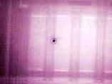

Optical
Beam-Induced Current (OBIC) Analysis
Optical
Beam-Induced Current (OBIC) is a semiconductor
analysis technique that employs a scanning
laser beam
to induce a current flow within a semiconductor sample which may be
collected and analyzed to generate images that represent the sample's
properties. It is a useful imaging technique for detecting or locating
various defects or anomalies on a semiconductor sample.
Conventional OBIC
scans an ultrafast laser beam over the surface of the sample, exciting
some electrons into the conduction band through what is known as
'single-photon absorption'.
As its name implies, single-photon absorption involves just a single
photon to excite the electron into conduction. This can only occur if
that single photon carries enough energy to overcome the
band gap
of the semiconductor
(1.2 eV
for Si)
and provide the electron with enough energy to make it jump into the
conduction band.
The energy of
a photon is given by the equation
E = hc/λ, where h is Planck's
constant, c is the speed of light, and λ is the wavelength of the
photon. Thus, photons with shorter wavelengths possess higher
energies than those with longer wavelengths.
The creation
of carriers by exciting the semiconductor with optical beam results in a
current flow that can be collected and used for
imaging.
The variations in currents produced by the laser beam as it scans the
sample is converted into variations in contrast to form the OBIC image.
One limitation
of
conventional OBIC operating on single-photon absorption is its
difficulty with transmitting light uniformly through the top surface of
modern IC's to the semiconductor itself. This non-uniform
transmission of light through the top surface is caused by the presence
of several layers of metal lines and other
materials. In such
instances, one solution is to perform the OBIC imaging from the IC's
backside through the substrate.

Figure 1.
OBIC Image of a p-n Junction with
a
recombination center
The
spatial
resolution
of
single-photon backside OBIC imaging, however, is limited by the
compromise
between being
able to transmit the beam through the substrate and at the same time
allowing the beam to be absorbed by the semiconductor for
the generation of electron-hole pairs that are measurable as a current.
The range of
wavelengths that can meet both of these requirements does not give
single-photon OBIC enough resolution for effective use in analyzing IC's
with submicron IC features.
This
limitation of single photon OBIC in backside analysis may be overcome by
'two-photon absorption',
which involves two photons arriving at the same time on the sample to
coherently 'free' the electron. The photons used for this purpose must
have energies that are less than the band gap of the semiconductor, but
greater than half the band gap.
Two-photon absorption is a non-linear
form of absorption,
with the success of generating carriers
depending on the square of the light intensity. This
quadratic intensity
dependence makes two-photon carrier generation very inefficient outside
the area of focus. OBIC that operates on two-photon absorption is also
known as
'TOBIC', which stands for 'Two-photon OBIC.'